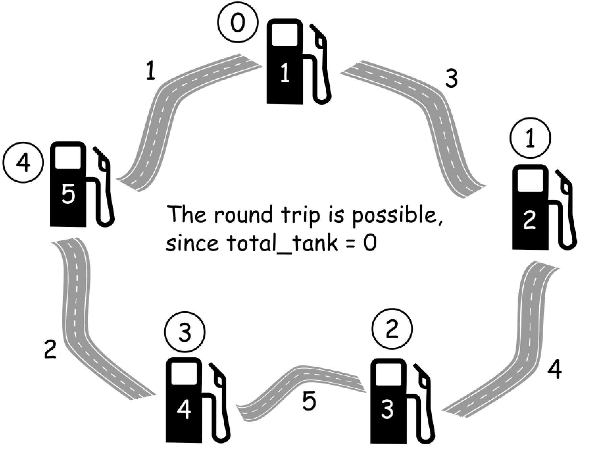
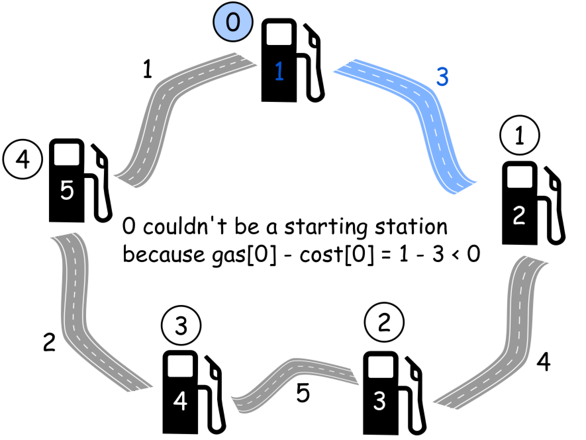
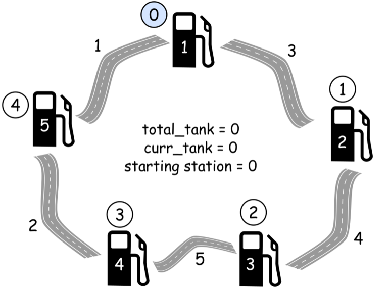

134. Gas Station



这道题首先要明白题意是什么？最关键是有几点：
-
总的油量是否够消耗？
-
首次发车的车站是否够行驶到下一个车站？
There are N gas stations along a circular route, where the amount of gas at station i is gas[i].
You have a car with an unlimited gas tank and it costs cost[i] of gas to travel from station i to its next station (i+1). You begin the journey with an empty tank at one of the gas stations.
Return the starting gas station’s index if you can travel around the circuit once in the clockwise direction, otherwise return -1.
Note:
-
If there exists a solution, it is guaranteed to be unique.
-
Both input arrays are non-empty and have the same length.
-
Each element in the input arrays is a non-negative integer.
Example 1:
Input: gas = [1,2,3,4,5] cost = [3,4,5,1,2] Output: 3 *Explanation: *Start at station 3 (index 3) and fill up with 4 unit of gas. Your tank = 0 + 4 = 4 Travel to station 4. Your tank = 4 - 1 + 5 = 8 Travel to station 0. Your tank = 8 - 2 + 1 = 7 Travel to station 1. Your tank = 7 - 3 + 2 = 6 Travel to station 2. Your tank = 6 - 4 + 3 = 5 Travel to station 3. The cost is 5. Your gas is just enough to travel back to station 3. Therefore, return 3 as the starting index.
Example 2:
Input: gas = [2,3,4] cost = [3,4,3] Output: -1 *Explanation: *You can't start at station 0 or 1, as there is not enough gas to travel to the next station. Let's start at station 2 and fill up with 4 unit of gas. Your tank = 0 + 4 = 4 Travel to station 0. Your tank = 4 - 3 + 2 = 3 Travel to station 1. Your tank = 3 - 3 + 3 = 3 You cannot travel back to station 2, as it requires 4 unit of gas but you only have 3. Therefore, you can't travel around the circuit once no matter where you start.
package com.diguage.algorithm.leetcode;
/**
* = 134. Gas Station
*
* https://leetcode.com/problems/gas-station/[Gas Station - LeetCode]
*
* There are N gas stations along a circular route, where the amount of gas at station i is `gas[i]`.
*
* You have a car with an unlimited gas tank and it costs `cost[i]` of gas to travel from station i to its next station (i+1). You begin the journey with an empty tank at one of the gas stations.
*
* Return the starting gas station's index if you can travel around the circuit once in the clockwise direction, otherwise return -1.
*
* *Note:*
*
* * If there exists a solution, it is guaranteed to be unique.
* * Both input arrays are non-empty and have the same length.
* * Each element in the input arrays is a non-negative integer.
*
* .Example 2:
* [source]
* ----
* Input:
* gas = [1,2,3,4,5]
* cost = [3,4,5,1,2]
*
* Output: 3
*
* Explanation:
* Start at station 3 (index 3) and fill up with 4 unit of gas. Your tank = 0 + 4 = 4
* Travel to station 4. Your tank = 4 - 1 + 5 = 8
* Travel to station 0. Your tank = 8 - 2 + 1 = 7
* Travel to station 1. Your tank = 7 - 3 + 2 = 6
* Travel to station 2. Your tank = 6 - 4 + 3 = 5
* Travel to station 3. The cost is 5. Your gas is just enough to travel back to station 3.
* Therefore, return 3 as the starting index.
* ----
*
* .Example 2:
* [source]
* ----
* Input:
* gas = [2,3,4]
* cost = [3,4,3]
*
* Output: -1
*
* Explanation:
* You can't start at station 0 or 1, as there is not enough gas to travel to the next station.
* Let's start at station 2 and fill up with 4 unit of gas. Your tank = 0 + 4 = 4
* Travel to station 0. Your tank = 4 - 3 + 2 = 3
* Travel to station 1. Your tank = 3 - 3 + 3 = 3
* You cannot travel back to station 2, as it requires 4 unit of gas but you only have 3.
* Therefore, you can't travel around the circuit once no matter where you start.
* ----
*
* @author D瓜哥, https://www.diguage.com/
* @since 2020-01-25 21:55
*/
public class _0134_GasStation {
/**
* Runtime: 0 ms, faster than 100.00% of Java online submissions for Gas Station.
*
* Memory Usage: 39.1 MB, less than 5.88% of Java online submissions for Gas Station.
*
* Copy from: https://leetcode-cn.com/problems/gas-station/solution/jia-you-zhan-by-leetcode/[加油站 - 加油站 - 力扣（LeetCode）]
*/
public int canCompleteCircuit(int[] gas, int[] cost) {
int n = gas.length;
int totalTank = 0;
int currentTank = 0;
int startStation = 0;
for (int i = 0; i < n; i++) {
totalTank += gas[i] - cost[i];
currentTank += gas[i] - cost[i];
if (currentTank < 0) {
startStation = i + 1;
currentTank = 0;
}
}
return totalTank >= 0 ? startStation : -1;
}
public static void main(String[] args) {
_0134_GasStation solution = new _0134_GasStation();
int[] g1 = {1, 2, 3, 4, 5};
int[] c1 = {3, 4, 5, 1, 2};
int r1 = solution.canCompleteCircuit(g1, c1);
System.out.println((r1 == 3) + " : " + r1);
}
}